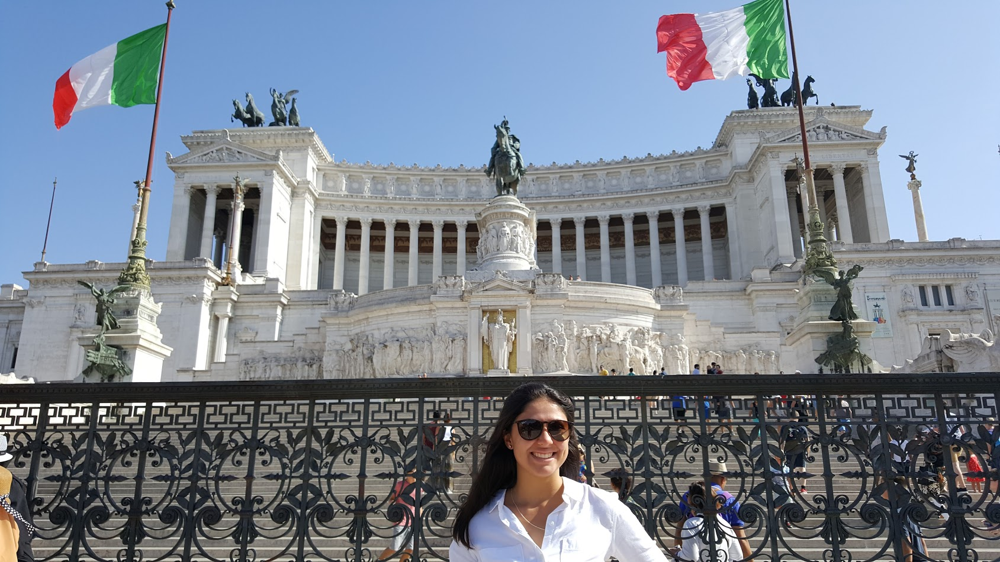
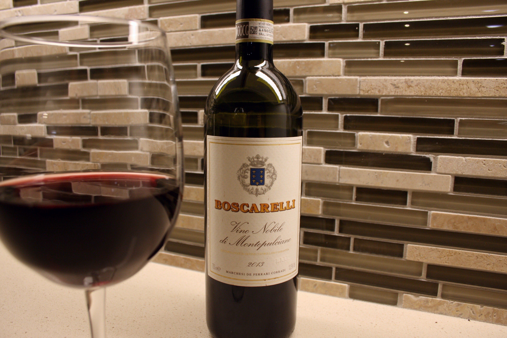

About Me
Hi! My name is Bianca Melone, and to better understand my survival kit, allow me to tell you a bit about myself. I am a die-hard Chicago Cubs (and baseball) fan, I'm Italian, I lived in Chicago for the first 19 years of my life, and I'm studying Interior Architecture and Design at The Academy of Art University in San Francisco. Some of my hobbies include rock climbing, playing the drums, playing catch, and photographing my guinea pigs. My 6-speed Miata, Suzy, is my most beloved posession, along with my baseball glove that my dad and two older brothers used before me. I hope you enjoy these items as much as I do!
About the Kit
I hold the items in this survival kit very close to my heart, as each of them hold some level of value to me. Some items, like chapstick and water bottles are things I would need if I was stranded on an island. Others items are ones I need in my everyday life, like my car, Suzy, and chapstick (you'll never see me without it!). Of course, there are items that I wouldn't necessarily want to bring to an island, like my guinea pigs, or a copy of "Lost" (you can probably guess why), but to me they are necessary to my happiness, so, with that, they have earned a place in this kit as well as other things that make me happy.